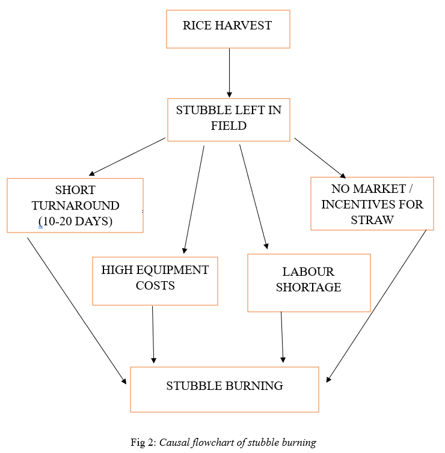

Abstract
Stubble burning in Punjab has become a major concern in recent years, particularly during the months of October and November. After harvesting paddy, farmers are left with large amounts of crop residue and very little time to prepare their fields for the next wheat crop. Since other methods of clearing this residue are costly, time taking and not easily accessible to everyone, many farmers end up burning it. Although this method is quick and convenient, it leads to serious environmental and health issues.
This study looks at stubble burning from a geographical and environmental perspective. It explains how the cropping pattern, climate conditions, and the limited gap between two crop cycles make burning a common practice. The study also highlights the regions where this issue is more prominent, such as Sangrur, Patiala, and Ludhiana, where farming intensity is high. It further discusses how the smoke from these fires affects air quality not only in Punjab but also in nearby areas like Delhi, especially during the winter season.
The paper also examines the economic and policy aspects of the issue. Government efforts like providing subsidies for machines and imposing fines have been introduced, but their impact has been limited due to practical difficulties faced by farmers. Overall, the study shows that stubble burning is not simply a matter of choice, but a result of the conditions farmers are working under. It suggests that long-term solutions will require better support systems, more accessible alternatives, and changes in existing farming practices.
1. Introduction
Stubble burning in Punjab has become a common issue, especially during the months of October and November after the paddy harvest. Punjab is one of India's major agricultural states, where farming mainly follows the paddy–wheat cycle. Once paddy is harvested, a large amount of leftover crop residue remains in the fields. Farmers then have a very short time to prepare the land for sowing wheat. Because of this time pressure and the high cost of other methods, many farmers choose to burn the residue.
Although burning helps farmers clear their fields quickly, it creates serious problems for the environment and public health. The smoke released from burning contains harmful pollutants like fine particulate matter (PM2.5 and PM10) and other gases, which reduce air quality. This pollution does not remain limited to Punjab; it also affects nearby regions, especially Delhi and the NCR, where it contributes to severe winter smog.
Stubble burning is not just an environmental issue but also linked to the way agriculture is structured in the region. Factors like cropping patterns, policies, and economic conditions all play a role in why this practice continues. So, to understand the problem properly, it is important to look at it from a geographical perspective, considering both human activities and their impact on the environment.
This paper aims to study the causes, distribution, impacts, and possible solutions to stubble burning in Punjab, with a focus on its geographical and environmental aspects.
2. Conceptual Framework
2.1 What is Stubble Burning
Stubble burning means setting fire to the leftover crop residue in the fields after harvesting. In Punjab, this mainly refers to the straw left after paddy (rice) is harvested. Every year, around 12–13 million tonnes of paddy straw is produced, and a large portion of it is burned in the open during October and November before wheat sowing starts.
From a geographical point of view, stubble burning shows how humans interact with the environment. It is not just a random activity, but part of the farming system. Farmers follow a paddy–wheat cycle and have very limited time and money, so they use burning as a quick way to clear the fields.

Farmers burn stubble mainly due to practical limitations rather than preference. The decision is influenced by a combination of time pressure, high costs, labour issues, and weak economic alternatives. Burning remains the fastest and cheapest way to clear fields.
3. Causes of Stubble Burning
3.1 Short Sowing Window
The biggest constraint is time. Farmers have a very limited period between harvesting paddy and sowing wheat. This short gap makes it impossible to rely on natural decomposition. Burning clears the field within a few hours, allowing immediate preparation for the next crop.
| Crop Type | Harvest Period | Wheat Sowing Deadline | Available Time |
|---|---|---|---|
| Basmati Paddy | Sept–Oct | Oct–Nov | ~15–20 days |
| Non-Basmati Paddy | Oct–Mid Nov | By Nov 25 | ~10–15 days |
3.2 High Cost of Machinery
Machines like the Happy Seeder and Super Seeder can manage stubble without burning, but they are expensive for most farmers. Even when rented, costs are around ₹1000–1200 per acre, which becomes expensive for farmers with large land areas.
| Machine | Function | Cost Range | Practical Issue |
|---|---|---|---|
| Happy Seeder | Direct wheat sowing in stubble | ₹1.3–1.5 lakh | High upfront cost |
| Super Seeder | Improved residue handling | ₹1.5–1.8 lakh | Limited access |
| Baler | Collects straw | ₹10+ lakh | Not affordable |
3.3 Labour Shortage and Mechanisation
Manual removal of stubble requires significant labour, which is increasingly unavailable due to migration from rural areas. At the same time, combine harvesters are widely used because they save time, but they leave behind tall stubble that is difficult to manage. This combination of reduced labour and mechanised harvesting indirectly promotes burning.
3.4 Lack of Incentives and Limited Alternatives
There are very few economically viable uses for paddy straw:
- Biomass energy plants exist but are limited
- Straw has low value as animal fodder
- Industrial uses (paper, packaging) are not well developed
- Biofuel sector is still emerging
Farmers are not directly paid for avoiding burning, and existing subsidies do not fully cover costs. Without a strong market or financial incentive, burning remains the most practical option.

4. Spatial Distribution in Punjab
The spatial distribution of stubble burning in Punjab shows a highly concentrated and uneven pattern, with clear regional clusters. The satellite-based thermal anomaly map (Oct 25 – Nov 1) indicates that stubble burning is densely concentrated in the central and southern parts of Punjab, while relatively lower intensity is observed in the northern and eastern regions.

The Malwa region, which includes districts like Sangrur, Bathinda, Mansa, Patiala, and parts of Ludhiana, clearly stands out as the most affected area. This region shows the highest number of fire incidents, which means stubble burning is happening on a large scale here. The main reason for this is the dominance of paddy farming, along with larger farm sizes and the extensive use of combine harvesters that leave behind a large amount of residue.
In comparison, central districts such as Jalandhar, Kapurthala, and Amritsar show a moderate level of stubble burning. The northeast districts, including Hoshiarpur, Rupnagar, and Pathankot, show very little stubble burning due to hilly uneven land and less focus on paddy cultivation.
5. Air Quality Impacts Across Punjab Cities (NASA Reports)
5.1 Deterioration of Air Quality
Stubble burning clearly affects air quality in Punjab, especially in October and November. Many farm fires happen within a short period, releasing a lot of smoke and fine particles into the air. Along with this, weather conditions like low temperatures, slow winds, and temperature inversion stop the pollutants from spreading out.

5.2 City-wise Air Quality Index (AQI) During Peak Burning Period
| City | Peak AQI (Typical Range) | Category |
|---|---|---|
| Jalandhar | 400–450 | Severe |
| Khanna | 420–460 | Severe |
| Mandi Gobindgarh | 420–450 | Severe |
| Ludhiana | 300–350 | Very Poor |
| Amritsar | 280–320 | Very Poor |
| Patiala | 250–300 | Poor |
| Bathinda | 100–150 | Moderate |
5.3 Relationship Between Farm Fires and AQI
There is a clear link between the number of farm fires and the rise in AQI levels. Satellite data shows that as the number of fire incidents increases, air quality begins to deteriorate within the next one to two days. This delay occurs because smoke travels with wind and accumulates over cities.
Fig 5: Punjab farm fires and percentage change in pollution from annual mean levels in Punjab and Delhi (Representative Data)
5.4 Pollutant Composition During Burning
When farmers burn stubble, a lot of harmful pollutants are released into the air. Data from cities like Ludhiana and Patiala shows that particulate matter is the main problem:
6. Health Impacts on Population
6.1 Acute Health Effects – The Immediate Toll
During the stubble burning season, the impact on public health is almost immediate. Hospitals and clinics across Punjab start seeing a noticeable surge in patients within days of the fires beginning.
Acute Respiratory Infections (ARI)
Affects all age groups, especially children under 5.
Asthma attacks
Hospital visits double for people with existing asthma.
COPD flare-ups
Emergency cases spike among the elderly and smokers.
Heart-related issues
Angina and heart attacks rise among the elderly.
6.2 Chronic Health Effects – Long-Term Burden
Continuous exposure to smoke year after year increases the risk of chronic diseases. Studies show 12-15% reduced lung function in children, 2.3 times higher risk of chronic bronchitis in adults, and growing concern regarding lung cancer and cardiovascular mortality.
6.3 District Level Health Data
Health impacts follow the spatial pattern of fire incidents. Districts with the highest fire counts also report the highest health burden.
| District | Fire Incidents (2025) | ARI Cases (Oct-Nov) | Increase Over Non-Burning |
|---|---|---|---|
| Tarn Taran | 444 | 12,450 | +38% |
| Sangrur | 406 | 11,820 | +35% |
| Ferozepur | 236 | 7,340 | +28% |
| Amritsar | 224 | 9,210 | +25% |
| Ludhiana | 189 | 14,560 | +22% |
7. Economic Costs of Stubble Burning
The impacts discussed are not limited to health—they also have clear economic consequences. Reduced productivity due to illness leads to a loss of working hours, which affects overall economic output.
7.1 Direct Costs to Farmers
Burning depletes soil organic matter and essential nutrients, forcing farmers to spend more on synthetic fertilizers to maintain yields. The annual fertilizer subsidy burden from burning is estimated at ₹1,050 crore if the entire paddy area were burned.
7.2 Missed Economic Opportunity – The Value of Stubble
Paddy straw is not a waste; it is a valuable biomass resource. If even 50% of paddy straw were utilised productively, it could generate ₹1,500–2,000 crore of annual revenue for Punjab’s rural economy.
Fig 7: Potential revenue per tonne of paddy straw by alternative end use (₹) (Illustrative Data based on text)
8. Global Comparative Analysis
Transboundary Haze
Context: Fires on Sumatra and Kalimantan clear land for oil palm and timber.
Lesson: Regional pressure forced action. A formal airshed agreement across affected Indian states could compel faster progress.
Phased Elimination
Context: Pre-harvest burning of sugarcane was routine until early 2000s.
Lesson: A legally mandated, long-term phase-out with clear deadlines works. Punjab needs an end date for burning, not just subsidies.
Crop Residue Management
Context: Corn and soybean residues comparable to paddy straw. Burning is now rare.
Lesson: Creating economic value for residue and linking conservation to subsidy eligibility reduces burning.
9. Critical Evaluation of Current Approaches
Although Punjab has reported a 92% decline in farm fires since 2021, structural gaps remain.
9.1 Strengths – What Has Worked
Overall reduction of 92% in fires (from 62,718 in 2021 to 4,732 in 2025). Increased stubble utilisation to 7.06 million tonnes (2025). ₹395 crore disbursed for CRM machinery.
9.2 Weaknesses – Persistent Gaps
The Detection Problem: Farmers have adapted to satellite pass-overs and now burn stubble in the late afternoon (4 PM - 6 PM), resulting in significant undercounting.
Uneven District Performance: While districts like Fatehgarh Sahib showed strong reductions, others like Fazilka saw a +118% increase.
Fig 8: Top 5 Districts by stubble burning incidents (Source: Hindustan Times 2025)
10. Proposed Policy Recommendations and Future
10.1 Solution Recommendations
10.1.1 Addressing Uneven Geographies
There is a need to develop district-specific action plans for high-incidence and underperforming regions. Establishment of mobile machinery banks offering subsidised rental services at more affordable rates.
10.1.2 Creating Stable Stubble Markets
Introduce a minimum procurement price for paddy straw (e.g., ₹2,000 per tonne). Revise power purchase rates to a more sustainable level (₹6–7 per unit) to help biomass plants restore operations.
10.2 Future Scenarios
Scenario 1: A Transformative Shift
With continuous satellite monitoring, binding phase-outs, and a ₹2,000/tonne MSP, burning is drastically reduced. Utilization of 10-12 million tonnes generates up to ₹3,500 crore in farm income. PM levels drop by 40-50%.
Scenario 2: Fragmented Case (Business as Usual)
Without changes, official fire numbers may drop but actual burning continues post-4 PM. Biomass plants shut down due to low power rates. Health impacts remain severe with an estimated 44,000 excess deaths annually.
11. Conclusion
Stubble burning is not simply the result of individual choices by farmers. It is closely tied to the structure of Punjab's agricultural system, particularly the short gap between rice harvesting and wheat sowing, the high cost of machinery, labour shortages, and the absence of reliable markets for paddy straw.
While official data shows a sharp decline in farm fires, this improvement is uneven. The environmental, health, and economic impacts remain significant—costing over ₹1,600 crore per year, alongside severe health outcomes.
The way forward lies in a more balanced approach: improving monitoring systems, focusing on high-incidence districts, and creating stable markets for crop residue. With consistent policy efforts, Punjab has the potential to move towards a more sustainable agricultural system.
12. Bibliography
Government and Official Sources
- Ministry of Environment, Forest and Climate Change. (2026). Parliament Question: Detection of stubble burning.
- Commission for Air Quality Management (CAQM). (2025). Punjab records 3,284 stubble burning.
- Punjab Pollution Control Board (PPCB). (2025). Punjab witnesses 50% drop in farm fires.
- Khudian, G. S. (2026). Centre's admission of stubble burning reduction is a victory.
- PTC News. (2025). Stubble burning in Punjab: CM Mann's home district Sangrur tops.
Academic and Scientific Research
- Jethva, H. (2025). Changing farmer practices: NASA explains how later stubble burns impact monitoring.
- Singh, N., et al. (2025). Temporal shift in stubble burning peak activity in northwest India.
- Yang, Z., et al. (2025). Perceptions of air pollution from stubble burning and its health risks in Punjab.
- Research Institute for Humanity and Nature (RIHN). (2025). Health risks of air pollution from stubble burning.